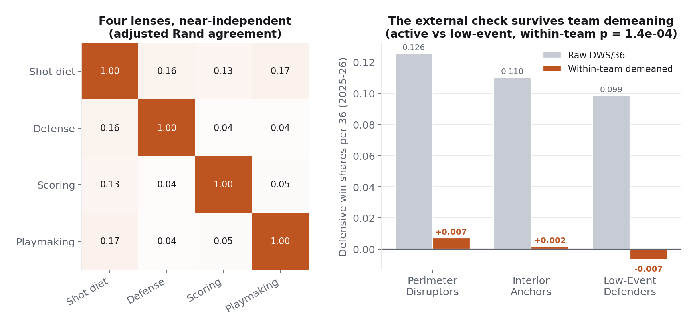

Player Role Lenses
A single all-purpose player clustering compresses everything a player is into one label. This analysis clusters the same 1,350 player-seasons through four independent lenses instead, so a player becomes a coordinate: shot diet, defensive job, scoring profile, playmaking tier. Cluster counts are selected against separation, density, and player-block bootstrap stability at once, and the defensive lens is checked against an outcome measure it never saw.
What is this player? One label cannot say.
Four nearly independent answers per player. Cross-lens agreement tops out at 0.168 adjusted Rand, so shot diet, defensive job, scoring profile, and playmaking tier are close to orthogonal dimensions. The league's most unusual profiles become expressible: an interior-touch big who is simultaneously a primary creator and a primary scorer, with a fit score that flags his defensive assignment as a genuine boundary case instead of forcing a clean label.
Every player-season with 1,000-plus minutes across five seasons, described by 27 engineered features and clustered four ways with KMeans, with Gaussian-mixture BIC and silhouette as selection evidence and a bootstrap that resamples players as blocks, all seasons of a sampled player moving together, because the same player's seasons are near-duplicates and row-level resampling flatters stability. Each lens replicates when refit on single seasons in isolation, every player carries a per-lens fit score so hybrids are visible, and rim defense runs through empirical Bayes shrinkage so no guard is labeled by a 45-attempt rim percentage.
The use case is role identification for scouting: a trade target is acquired for a role, not a rating. Ten tables join into the pool with one-row-per-player-season assertions guarding every merge. Features are per-36 rates and opportunity-adjusted shares, power-transformed within each season so a cluster means the same thing in 2021-22 as in 2025-26 even as league behavior drifts, and every feature also gets a within-season percentile so any player-season reads as a profile independent of the labels.
Six shot diets, three defensive jobs, four scoring quadrants, three playmaking tiers, each named from its profile with exemplars printed from the data. The defensive lens is the strongest: it replicates at 0.928 when refit on single seasons, and its three roles separate on defensive win shares per 36, an outcome the lens never saw, with the separation surviving within-team demeaning (p = 1.4e-04), which rules out the objection that good defenses simply employ good defenders. Role change is real but concentrated among boundary players: above-median-fit players change roles at 4 to 16 percent per year against 31 to 44 percent for boundary cases, and a three-year average profile can land in a role the player never occupied in any actual season, which is why the deployed table is season-level.

The players nearest each cluster centre, printed by the analysis from the fitted solutions. They are the face-validity check a role label has to pass: each list should read as a recognizable basketball type, and the most unusual case in the sample, an interior-touch big assigned Perimeter Disruptor with a near-zero fit score, is flagged as a boundary hybrid rather than forced into a clean label.
- Shot diet: Pull-Up Creators
- Terry Rozier, Tyler Herro, Cole Anthony
- Shot diet: Downhill Attackers
- LeBron James, Jaylen Brown, Jalen Johnson
- Shot diet: Spot-Up Shooters
- Jose Alvarado, Luguentz Dort, Grayson Allen
- Shot diet: Rim Runners
- Kevon Looney, Drew Eubanks, Onyeka Okongwu
- Shot diet: Post-and-Pop Bigs
- John Collins, Myles Turner, Santi Aldama
- Shot diet: Low-Volume Connectors
- Caleb Martin, Naji Marshall, Jaden McDaniels
- Defense: Interior Anchors
- Naz Reid, P.J. Washington, Wendell Carter Jr.
- Defense: Low-Event Defenders
- Mikal Bridges (BKN season), Malik Monk, Cameron Johnson
- Defense: Perimeter Disruptors
- OG Anunoby, Alex Caruso, Marcus Smart, Dyson Daniels
- Scoring: Low-Usage Efficient
- Clint Capela, Nic Claxton
- Scoring: Minimal Load
- Jae Crowder, Kenrich Williams
- Scoring: Inefficient Secondary
- Tim Hardaway Jr., Tobias Harris, Cedi Osman
- Scoring: Primary Scorers
- Devin Booker, Pascal Siakam, Anthony Davis
- Playmaking: Primary Creators
- De'Aaron Fox, Kyrie Irving, CJ McCollum
- Playmaking: Play Finishers
- Doug McDermott, Corey Kispert, Guerschon Yabusele
- Playmaking: Connectors
- Miles Bridges, Jerami Grant, Keldon Johnson
Every player-season and its fit score is browsable in the role explorer.
Browse every player in every role
Pick a lens, then a role, and every player-season assigned to it appears with its fit score and the within-season percentiles that define the lens. Fit is the assignment confidence; a value near zero marks a boundary hybrid. The scoring lens is a descriptive partition, per the selection analysis above.
The deployed table gives a scout a four-coordinate answer to what a player is, a percentile answer to how he does it, and a fit score for how much to trust the label. Role change is real but concentrated among boundary players, so season-level labels, with the trajectory read off the rows, are the defensible unit of evaluation; a three-year average can describe a player who never existed in any actual season.
The review found that the stability bootstrap resampled rows despite players repeating up to five times, which overstates stability. Corrected to a player-block bootstrap, three of the four chosen solutions still clear the pre-registered 0.85 bar (defense 0.919, playmaking 0.946, shot diet 0.882), and one does not: the scoring lens falls to 0.836 and is downgraded in the analysis from stable structure to the most informative descriptive partition of the volume-efficiency plane. The review also prompted the fit-conditioned transition analysis, which reframed role churn: much of the raw change rate is boundary flicker the fit scores already flag.
Scheme value, matchup difficulty, and off-ball deterrence are invisible to tracking counts. The win-shares check covers one season because the source table exists for one, and win shares are themselves a model-based estimate. The shrinkage constant is global rather than positional. Five seasons measures year-over-year change, not career arcs.
Technical deep dive
Technical highlights
- Selection against three criteria at once: silhouette separation, Gaussian-mixture BIC, and player-block bootstrap stability, with the selection rule fixed before looking.
- Empirical Bayes rim shrinkage with the constant estimated from a variance decomposition: a player's rim percentage is trusted half-and-half against league average at about 60 defended attempts.
- Per-player fit scores from per-point silhouettes, so hard assignment never hides a hybrid: fewer than 2 percent of players sit closer to a neighboring cluster than their own.
- The external check is run twice, raw and within-team demeaned, because defensive win shares correlate with team defensive quality at -0.83 and the naive version could be an illusion of roster quality.
Key decisions
- Why four clusterings instead of one?
- Because roles are not one thing, and the data agrees: the four assignments agree with each other barely above chance. One clustering would average four independent dimensions into a blur.
- Why keep a scoring solution that missed the stability bar?
- Because the quadrant structure is the most informative description of the volume-efficiency plane even if its boundaries move under resampling. The analysis reports it as descriptive, which is what the evidence supports, rather than dropping it or overselling it.
Technology stack
Built on five seasons (2021-22 through 2025-26) of NBA Stats dashboard data compiled into a local SQLite database of 97 tables. All six research analyses run against the same database. Notebooks available by email.